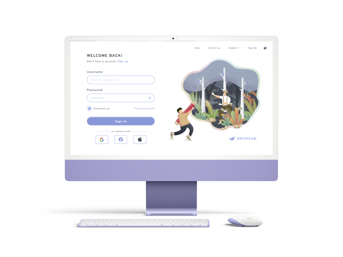

01

간편로그인을 통해 간편한 로그인이 가능한 사이트를 구현해보았습니다. 해당 사이트를 가입함으로 더 좋은 사이트를 경험할 수 있도록 사용자 중점에서 생각하였습니다.
LoginAPI
02

안녕하세요 API 프로젝트, 노인정입니다! 저희의 노력이 담긴 포트폴리오에서 두 번째 활용해 본 API는 날씨 기능입니다. 효과적으로 사용자에게 현재 날씨를 알려주기 위하여 기온, 미세먼지의 정보를 불러왔고 그 정보를 아이콘을 통해 직관적으로 노출하여 사용자에 이해와 편의성에 도움을 주기 위한 기획을 하였습니다. 비록 완벽하게 세부적인 내용을 담지는 못하였지만 API를 불러와서 적용하는 공부를 하기 위한 페이지로 이쁘게 봐주세요! 감사합니다.

WEATHERAPI
03

간편로그인을 통해 간편한 로그인이 가능한 사이트를 구현해보았습니다. 해당 사이트를 가입함으로 더 좋은 사이트를 경험할 수 있도록 사용자 중점에서 생각하였습니다.

asdasdAPI